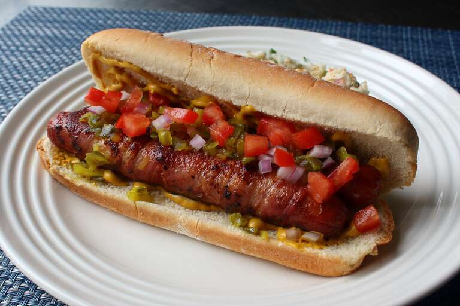

Bacon-Wrapped Double Dog Recipe.

Desciption.
We are making a bacon dog by using 2 small hot dogs, which we will merge using the bacon. Other than potato chips, we think potato salad is the best hot dog side dish!
It will take about 25 minutes, 15 for preparation, and 10 for cooking.
Ingredients
- 4 hot dogs
- 4 slices cold center-cut, thinly sliced bacon.
- 2 large hot dog buns.
- 2 tablespoons prepared yellow mustard, or to taste.
- 2 teaspoons diced red onion, or to taste.
- 2 tablespoons diced tomato, or to taste.
Steps
- Place 1 hot dog horizontally at the top edge of 1 bacon slice; roll once to secure. Place the second hot dog on the bacon directly under the first hot dog,
and warp bacon twice at an angle. Tuck between the two dogs. Tuck in second bacon slice where you lift off and roll over remaining half of the hot dogs.
Secure the end between the hit dogs. Repeat with remaining hot dogs and bacon slices.
- Heat a nonstick pan over medium heat and add bacon-wrapped hot dogs. Cook, turning as needed, until browned on all sides, about 10 minutes.
- Spread 1 tablespoon mustard over each bun. Add hot dogs. Top with dill pikle ,relish, red onion and tomato.
Return to main page.